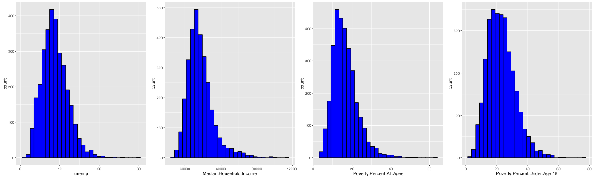
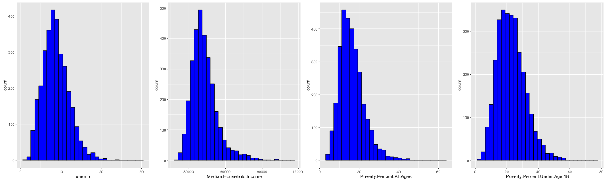
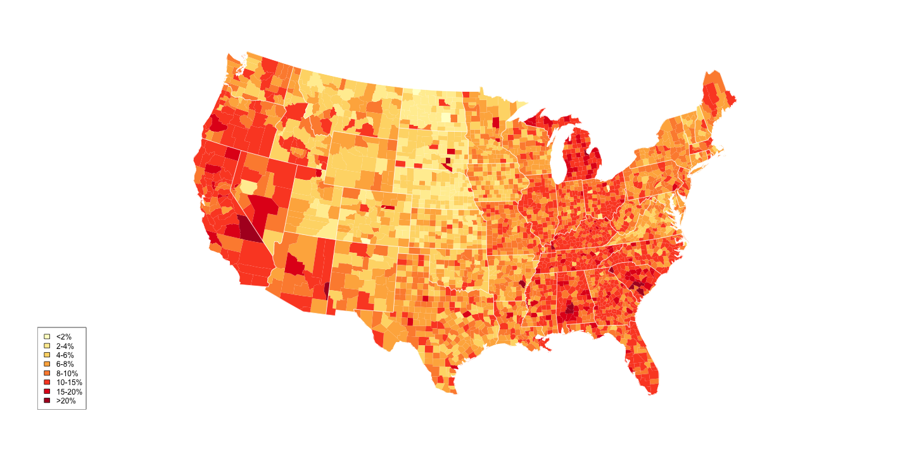
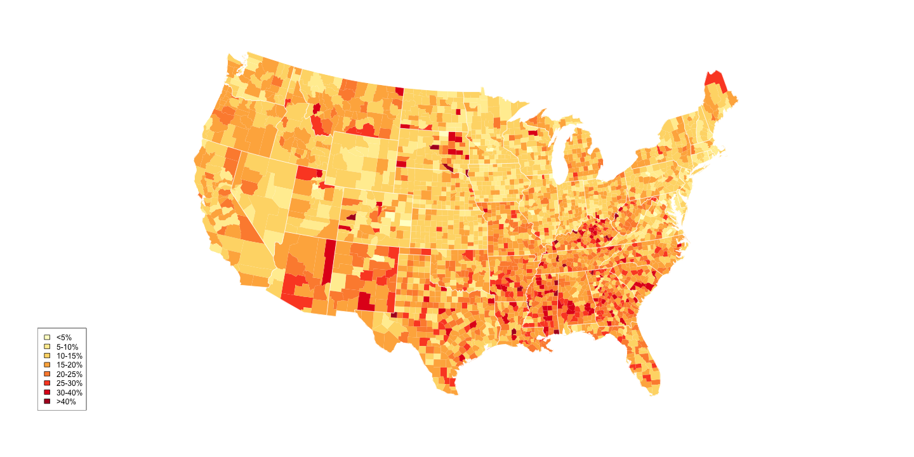

- County level unemployment rate, poverty rate and median income level data in 2009
- Poverty rate include Poverty rate among all, poverty rate among under 18, and poverty rate among age 5 to 17.
- Median household income in each county.

Yuan Liu

PovertyCut <- c(0, 5, 10, 15, 20, 25, 30, 40, 100)
PovertyCutTex <- c("<5%", "5-10%", "10-15%", "15-20%", "20-25%", "25-30%", "30-40%",
">40%")
UnempCut <- c(0, 2, 4, 6, 8, 10, 15, 20, 100)
UnempCutTex <- c("<2%", "2-4%", "4-6%", "6-8%", "8-10%", "10-15%", "15-20%",
">20%")
IncomeCut <- c(10000, 20000, 30000, 35000, 40000, 45000, 50000, 60000, 80000,
1e+05, max(mydf$Median.Household.Income))
IncomeCutTex <- c("<$10K", "$10K-20K", "$20K-30K", "$30K-40K", "$40K-50K", "$50K-60K",
"$60K-70K", "$70K-80K", "$80K-90K", "$90K-100K", ">$100K")
See more visualization on the app: https://phoebe3121.shinyapps.io/DevelopingDataProduct/ Visualize the 2009 unemployment rate across the country.

See more visualization on the app:https://phoebe3121.shinyapps.io/DevelopingDataProduct/ Visualize 2009 Poverty Rate Across the Country
